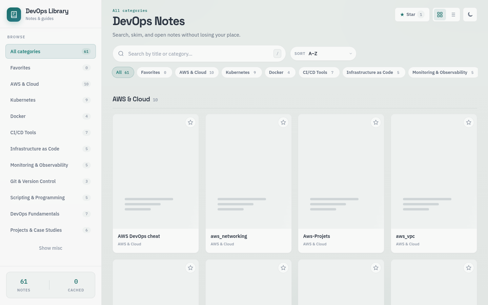

Packages · Go
Docker Log Viewer
A lightweight control plane for live container logs, compose stacks, RBAC, and multi-host standalone / agent mode — installable via apt and dnf.

Govind Singh
4.7+ years designing, debugging, and running AWS and Kubernetes platforms — with a focus on monitoring tools, secure delivery, and calm operator experiences.
Bengaluru, India
Tools and libraries built for operators and learners in the DevOps space.
Packages · Go
A lightweight control plane for live container logs, compose stacks, RBAC, and multi-host standalone / agent mode — installable via apt and dnf.
Learning library · Web
A searchable notes library for DevOps guides — browse by category, star favorites, resume reading, and keep progress on-device for quick access.

Cloud DevOps Engineer at Decimal Technologies, Gurugram — Feb 2022 to present.
I’m a Cloud DevOps Engineer who thrives in fast-paced environments — strong on design, root-cause analysis, and application management. My focus is building and maintaining monitoring tools and cloud solutions that stay reliable under real production load.
Stack highlights include AWS, Kubernetes, Jenkins/Argo CD/Azure DevOps, Docker, Terraform, Ansible, Prometheus/Grafana, and the EFK/ELK ecosystem — plus Python automation with Boto3.

Based in Bengaluru — open to DevOps, platform, and cloud engineering conversations.